暂存与提交更改
创建重点明确且描述清晰的提交，有助于你和团队理解代码库的历史记录。VS Code 提供了集成的 Git 工具来暂存更改和创建提交，并支持精细控制要包含哪些更改。
本文介绍 VS Code 中的暂存和提交工作流，涵盖 Git 的两步流程、使用 AI 辅助编写提交消息以及在提交前审查更改。
Git 工作流
Git 使用两步流程保存你的工作：暂存和提交。当你修改文件时，Git 会跟踪这些更改，但不会自动将其包含在下一次提交中。暂存允许你选择在每次提交中包含哪些更改。
可以将暂存理解为准备工作的快照。你可以一次性暂存所有更改以进行综合提交，也可以暂存特定文件甚至单独的代码行，以创建重点明确、逻辑清晰的提交，便于日后审查和理解。
查看更改
源代码管理视图（kb(workbench.view.scm)）是管理 Git 仓库中更改的中央枢纽。更改根据其暂存状态分为两个部分：
- 更改：列出所有尚未暂存以供提交的已修改、已添加或已删除的文件
- 暂存的更改：列出已暂存并准备好提交的文件
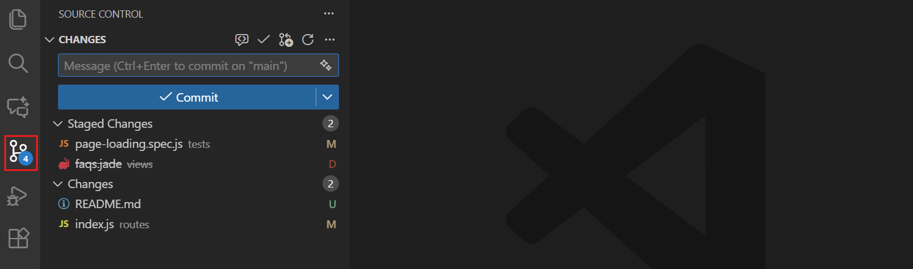
请注意，已更改的文件旁边会显示带有 "U"（未跟踪）、"M"（已修改）或 "D"（已删除）的图标，以指示更改类型。此更改指示符也会在资源管理器视图和已修改文件的编辑器选项卡标题中显示。
活动栏中的源代码管理图标还会显示一个包含受影响文件数量的徽章，让你快速了解未提交更改的概况。
[!TIP]
你可以以平铺或树状结构查看更改列表。通过源代码管理视图工具栏中的更多操作（...）> 视图和排序 > 查看为树/列表选项切换。
编辑器装订线指示符
为了帮助你快速识别文件中的更改，VS Code 在编辑器行号旁边显示装订线指示符，表示自上次提交以来添加、修改或删除的行。你还可以在缩略图中看到这些指示符。
装订线颜色表示更改类型：
- 绿色竖条：自上次提交以来添加的新行
- 蓝色竖条：自上次提交以来修改的行
- 红色三角形：已删除的行（显示在删除位置上方）
选中装订线指示符时，会显示更改的内联差异预览。你可以使用相应的按钮从此预览中直接暂存或还原更改。
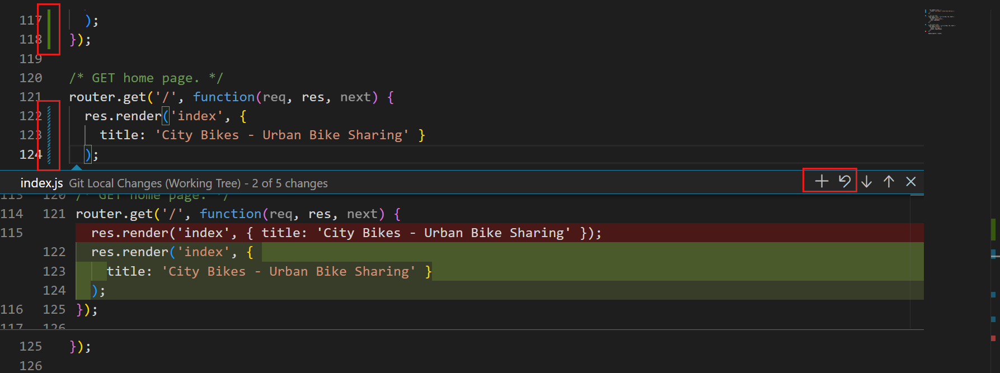
你可以使用以下设置自定义装订线指示符行为：
setting(scm.diffDecorations)：控制差异装饰何时出现（all、gutter、overview、minimap 或 none）setting(scm.diffDecorationsGutterAction)：控制装订线菜单中可用的操作setting(scm.diffDecorationsGutterPattern)：自定义用于装订线装饰的模式setting(scm.diffDecorationsGutterVisibility)：控制何时显示装订线装饰（always 或 hover 时）setting(scm.diffDecorationsGutterWidth)：设置装订线指示符的宽度setting(scm.diffDecorationsIgnoreTrimWhitespace)：在差异装饰中忽略空白字符更改暂存更改
暂存更改是将它们准备好以添加到下一次提交的过程。你可以暂存整个文件，也可以暂存特定的代码行和代码块，以实现更精细的控制。
要暂存单个文件，将鼠标悬停在更改列表中的文件上并选择 +（加号）图标，或右键单击文件并选择暂存更改。你也可以将文件从更改部分拖放到暂存的更改部分来暂存它们。
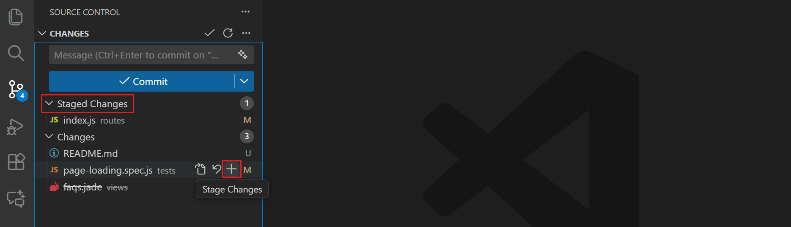
当你使用树状视图时，可以通过暂存文件夹本身来暂存整个文件夹。要一次性暂存所有已修改的文件，将鼠标悬停在更改标题上并选择 +（加号）图标。
命令面板（kb(workbench.action.showCommands)）中提供了更多专用的暂存操作。输入 "Git: Stage" 查看暂存文件的选项。
暂存特定代码行或代码块
除了暂存整个文件，你还可以暂存文件的特定部分。部分暂存使你能够创建重点明确的提交。例如，如果你在同一文件中进行了格式化更改和错误修复，可以将它们分开提交并附上适当的提交消息。
你可以从差异编辑器执行部分暂存：
- 在更改列表中选择一个文件以打开差异编辑器
- 选择要暂存的行
- 使用差异编辑器装订线中选中内容旁边的暂存按钮，仅暂存这些行
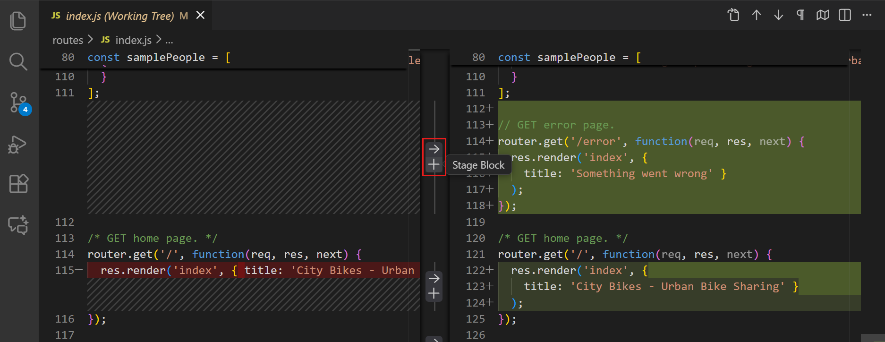
你也可以右键单击选中内容并选择暂存所选范围，或从命令面板运行 Git: Stage Selected Ranges。
取消暂存更改
要从暂存中移除文件，将鼠标悬停在暂存的更改列表中的文件上并选择 -（减号）图标，或右键单击并选择取消暂存更改。文件将移回更改部分，而不会丢失你的修改。
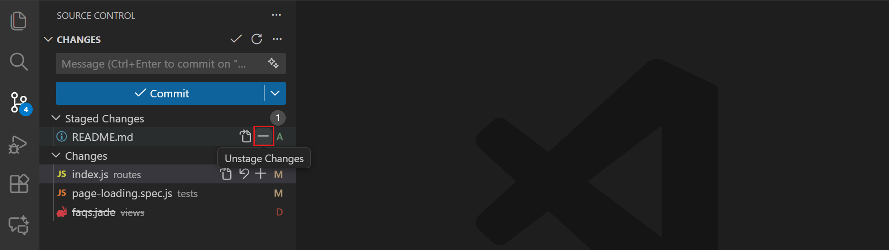
同样，你也可以使用差异编辑器装订线中选中内容旁边的取消暂存按钮，取消暂存特定代码行或代码块。
提交更改
暂存更改后，你可以创建提交将它们保存到本地仓库。要创建提交，你需要编写一条描述更改的提交消息。此消息帮助你和他人查看提交历史时理解提交的目的。
编写提交消息
提交消息描述你正在提交的更改，并帮助他人（以及未来的自己）理解提交的目的。在源代码管理视图顶部的提交消息输入框中输入你的消息，然后选择提交以保存已暂存的更改。
为了帮助你编写提交消息，请在提交消息输入框中选择闪光图标 ，以使用 AI 根据已暂存的更改生成消息。你可以创建自定义指令来指导 AI 生成消息。
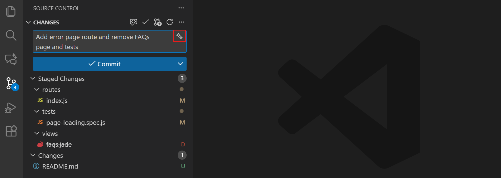
如果你想编写包含多个段落的提交消息，可以使用完整的编辑器而不是输入框。通过 setting(git.useEditorAsCommitInput) 设置启用此功能。当你在没有提交消息的情况下提交更改时，会打开一个新的编辑器选项卡供你编写消息。
[!TIP]
在提交消息输入框获得焦点时，按kb(history.showPrevious)和kb(history.showNext)可以循环浏览之前的提交消息。
使用编辑器编写提交消息
你可以不使用提交消息输入框，而是在完整的编辑器选项卡中编写提交消息。这对于较长的消息或需要更多空间来编写消息时非常有用。
- 在源代码管理视图中，选择提交而不在提交输入框中输入消息。这会打开一个名为
COMMIT_EDITMSG的新编辑器选项卡。
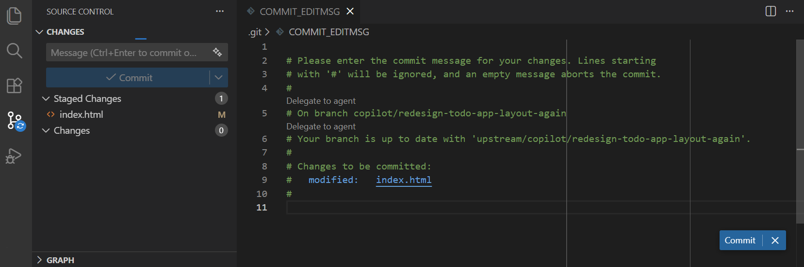
- 在编辑器中编写提交消息。你可以使用多个段落并根据需要格式化消息。
- 要接受提交消息并完成提交操作，可以关闭编辑器选项卡或在编辑器中选择提交。
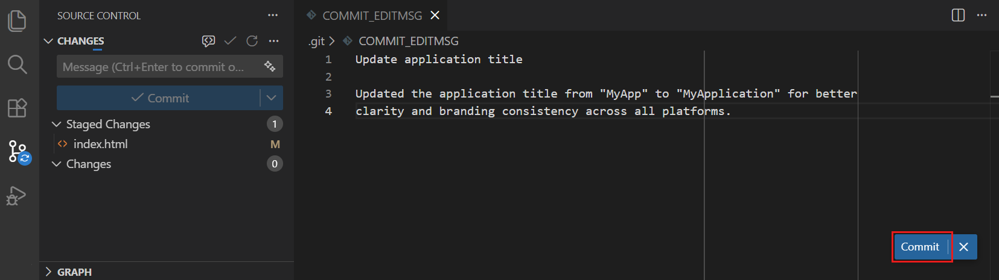
- 要取消提交操作，可以清空文本编辑器的内容并关闭编辑器选项卡，或在编辑器中选择取消（
X）。
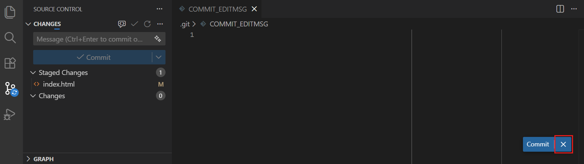
要禁用使用编辑器编写提交消息并恢复到快速输入控件，请禁用 setting(git.useEditorAsCommitInput) 设置（重启 VS Code 以使更改生效）。
要对集成终端中执行的 git commit 命令使用相同的流程，请启用 setting(git.terminalGitEditor) 设置（重启终端以使更改生效）。
AI 共同作者署名
当你提交使用 AI 辅助生成的代码时，VS Code 可以自动将 Co-authored-by: Git 尾部附加到你的提交消息中。这有助于你和团队跟踪哪些提交包含 AI 生成的贡献。
使用以下值之一配置 setting(git.addAICoAuthor) 设置：
chatAndAgent（默认）：在提交通过 Copilot Chat 或代理模式生成的代码时添加尾部all：为所有 AI 生成的代码添加尾部，包括内联补全off：不添加共同作者尾部
尾部仅在你从 VS Code 内提交时添加。使用外部 Git 工具或命令行进行的提交不包含尾部。
提交尾部中的共同作者信息也会显示在 Git blame 悬停提示框中。
提交更改
在源代码管理视图中选择提交按钮，以提交暂存的更改部分中的更改。任何未暂存的更改将保留在更改部分中以供将来提交。
要一次性提交所有更改（已暂存和未暂存），请选择更多操作（...）菜单，然后选择提交 > 全部提交。这会一步暂存并提交所有已修改的文件。
修改上一次提交
如果你需要修改最近的提交，可以修订（amend）它而不是创建新的提交。这对于添加遗漏的更改或更正提交消息非常有用。
要修订提交，请选择提交按钮下拉菜单并选择提交（修订），或使用更多操作（...）菜单中的提交已暂存（修订）选项。
[!NOTE]
仅修订尚未推送到共享仓库的提交。修订已推送的提交会重写历史记录，可能会给其他协作者带来问题。
撤销上一次提交
如果你需要撤销上一次提交，请选择源代码管理视图中的更多操作（...）菜单，然后选择提交 > 撤销上一次提交。这会从分支历史中移除上一次提交，但会将该提交中的所有更改保留在暂存的更改部分中。
放弃更改
要完全放弃未提交的更改并将文件恢复到其上次提交的状态，请右键单击源代码管理视图中的文件并选择放弃更改。或者，将鼠标悬停在更改列表中的文件上并选择放弃图标（向左弯曲的箭头）。
放弃的更改将移至回收站（Windows）或废纸篓（macOS/Linux），让你有机会在需要时恢复它们。
使用差异编辑器审查更改
差异编辑器显示文件中的更改内容。它并排显示原始版本和修改后版本的比较。差异编辑器可以并排或内联视图打开。
要打开差异编辑器，请在源代码管理视图的更改或暂存的更改列表中选择任意文件，以查看该文件与上次提交版本之间的更改。
[!TIP]
对于大文件，通过选择差异编辑器工具栏中的折叠未更改区域按钮来折叠未更改的部分。这有助于你专注于实际更改。你还可以使用下一个更改和上一个更改按钮在更改之间快速导航。
并排视图与内联视图
默认情况下，差异编辑器显示并排比较，原始文件在左侧，你的更改在右侧。
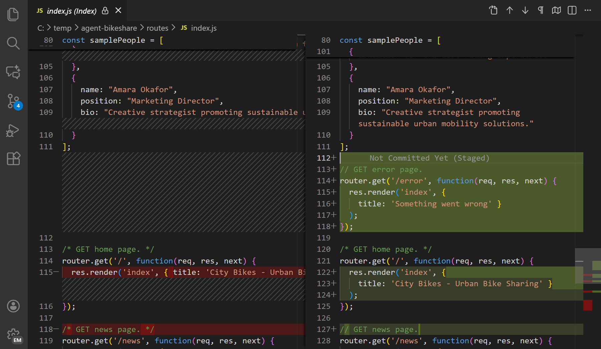
通过选择差异编辑器工具栏中的更多操作（...）> 内联视图切换为内联视图，在单一编辑器中查看更改。
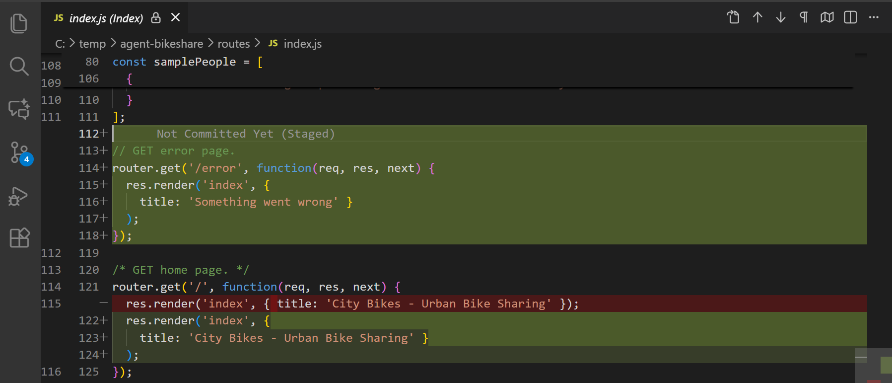
使用 setting(diffEditor.renderSideBySide) 设置配置你偏好的默认视图。
从差异编辑器暂存和还原
差异编辑器在每个更改旁边包含一个带有暂存和还原按钮的装订线。这些按钮允许你：
- 直接从差异视图中暂存单个代码块或代码行
- 还原特定更改而不影响其他修改
如果你在差异编辑器中选择了特定行，这些按钮仅对你的选中内容操作。
你可以使用 setting(diffEditor.renderGutterMenu) 设置隐藏差异编辑器装订线。
无障碍差异查看器
对于屏幕阅读器用户，VS Code 提供无障碍差异查看器（Accessible Diff Viewer），以统一的补丁格式显示更改。要打开无障碍差异查看器，请使用差异编辑器工具栏中的更多操作（...）菜单并选择打开无障碍差异查看器，或使用 kb(editor.action.accessibleDiffViewer.next) 键盘快捷键。
使用转到下一个差异（kb(editor.action.accessibleDiffViewer.next)）和转到上一个差异（kb(editor.action.accessibleDiffViewer.previous)）命令在更改之间导航。
使用 AI 审查代码更改
VS Code 使你能在提交前使用 AI 辅助审查未提交的更改。这些 AI 功能可以补充手动代码审查，帮助你在开发工作流早期发现问题。
要对未提交的更改执行 AI 驱动的代码审查：
- 选择源代码管理视图中的代码审查按钮
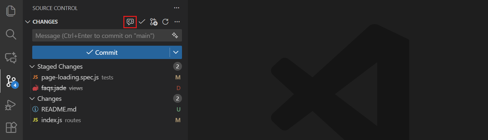
- VS Code 分析你的更改并生成审查评论和建议，这些内容以叠加评论的形式显示在编辑器中

Git blame 信息
VS Code 可以在编辑器内和状态栏中显示 git blame 信息。将鼠标悬停在状态栏项目或编辑器内联提示上，可查看详细的 git blame 信息，包括提交中的任何共同作者尾部。如果你启用了 AI 共同作者署名，blame 提示框会为包含 AI 生成代码的提交显示 AI 共同作者。
要启用或禁用 git blame 信息，请使用 Git: Toggle Git Blame Editor Decoration 和 Git: Toggle Git Blame Status Bar Item 命令，或配置以下设置：
setting(git.blame.statusBarItem.enabled)（默认启用）setting(git.blame.editorDecoration.enabled)（要禁用编辑器中的悬停信息，请使用setting(git.blame.editorDecoration.disableHover)设置）
要在显示 git blame 信息时忽略空白字符更改，请启用 setting(git.blame.ignoreWhitespace) 设置。
你可以使用 setting(git.blame.editorDecoration.template) 和 setting(git.blame.statusBarItem.template) 设置，自定义在编辑器和状态栏中显示的消息格式。你可以使用变量表示最常用的信息。
例如，以下模板显示提交主题、作者姓名以及相对于当前的作者日期：
{
"git.blame.editorDecoration.template": "${subject}, ${authorName} (${authorDateAgo})"
}要调整编辑器装饰的颜色，请使用 git.blame.editorDecorationForeground 主题颜色。
提交历史图形视图
源代码管理视图中的源代码管理图表提供了提交历史和分支关系的可视化表示。当你配置了远程仓库时，可以查看你领先或落后远程仓库多少个提交。
该图表包含当前分支、当前分支的上游分支以及一个可选的基础分支。图表的根是这些分支的公共祖先。
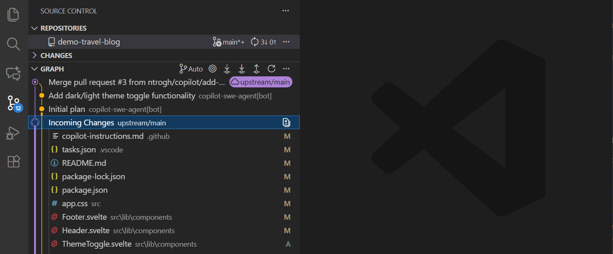
该图表提供以下功能：
- 选择一个条目以查看该提交中更改的文件。选择打开更改操作以在编辑器中查看该提交的差异。
- 右键单击提交以执行操作，例如检出、拣选（cherry-pick）、将其作为上下文添加到聊天等。
- 选择一个文件以在编辑器中查看该文件的差异。
- 选择一个提交并通过右键单击提交并选择与……比较、与远程比较或与合并基准比较，将其与其他分支或标签进行比较。
使用图表视图工具栏中的操作来选择分支、获取、拉取、推送和同步更改。
文件历史时间线视图
时间线视图位于文件资源管理器底部，是一个用于可视化文件事件历史的统一视图。例如，你可以在时间线视图中查看 Git 提交或本地文件保存记录。

详细了解时间线视图。
后续步骤
- 分支与工作树 - 了解分支管理、Git 工作树和贮藏操作
- 仓库与远程 - 了解克隆、发布以及与远程仓库同步
- 合并冲突 - 处理合并分支时的冲突
- 使用 GitHub - 了解如何使用拉取请求和议题
- VS Code 中的 Copilot - 探索更多 AI 驱动的开发功能